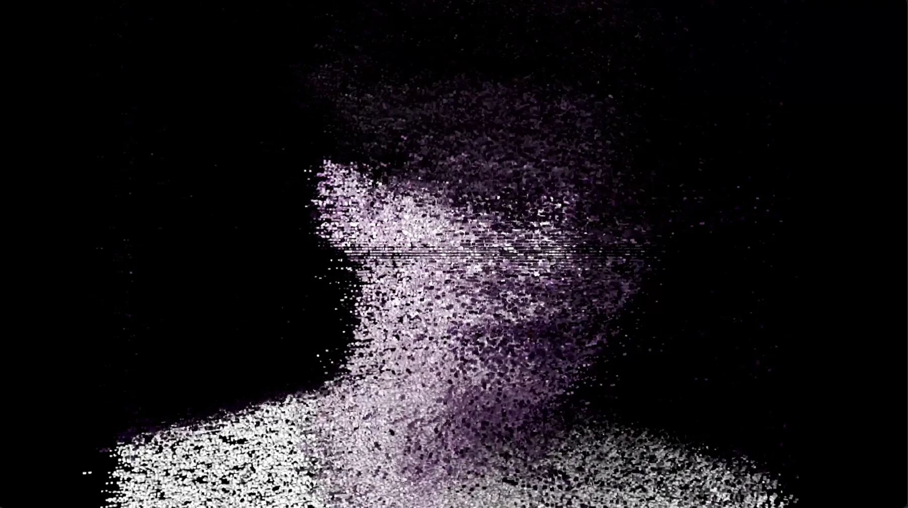

Selected Collaboration / 2026
Album Listening Session
A continuous visual environment composed for listening.

Project
A 30-minute audio-reactive work commissioned for an album listening session.
For a pre-release album listening session, Park created a continuous 30-minute audio-reactive visual system designed to unfold across the album without interrupting the act of listening.
Visual direction, motion design and the responsive relationship between sound and image were composed as one sustained environment. Rather than illustrating individual tracks, changes in rhythm, density and atmosphere shaped the movement of the visual field.
The work extends Park’s moving-image practice into a music context while retaining an artist-led visual language across a long-duration event format.
Role
Visual direction / Audio-reactive visuals / Motion design / Full-length event content
Documentation
Project photography and moving-image documentation will be added here.